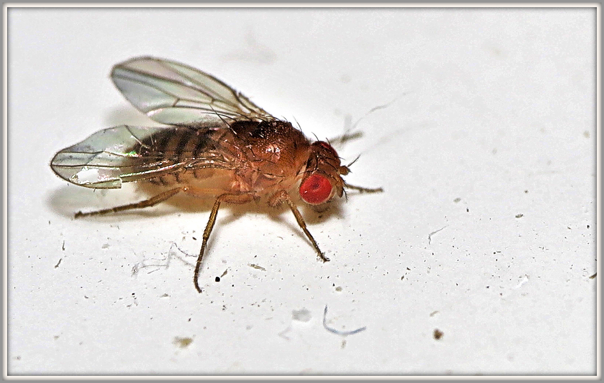

ON OTTO’S SCREEN01 / 06
D. MELANOGASTER ♀

Peachesadult fly
Long walks across your unattended drink.
Slow, steady movementStrong chemical-relay cue
OTTO’S NEXT MOVE
Let him find his type.
Load the mapped nervous system, then Otto takes over.
First visit downloads approximately 73 MB of neural data. Best on a computer.
Virtual candidates have different sensory cues. The same specimen photo illustrates each profile; its pixels and bio are not model inputs.